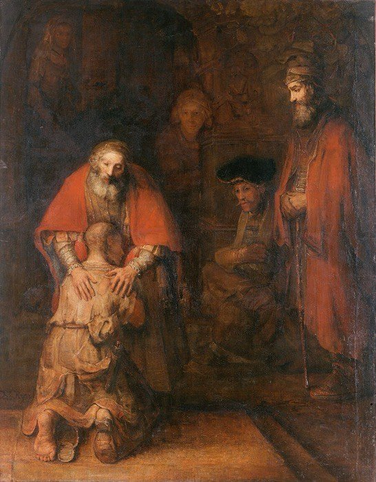

Luke 15 — The Mister Translation

⭐⭐⭐ One of Rembrandt's last paintings, and its two hands are not the same hand. Painted within roughly two years of his own death, it is read almost universally as the father's two hands deliberately given different characters — one larger, rougher, more clearly a father's; the other smaller, gentler, read by many as a mother's — so that the single embrace of v20 becomes, in paint, both parents at once. The son's bare, calloused foot and worn-through sandal are the physical residue of the ‘distant country’ (v13); the four half-lit figures standing apart are usually read as the household’s servants and the elder son, watching rather than joining.

Translator’s Notes — verse by verse
⭐⭐⭐ “Muttered” is a stronger verb here than the last time these same two groups did it. The verb gongyzō, with its compound, stands in nine verses of the whole New Testament, and Luke uses it three times: a plain ‘the Pharisees and their scribes muttered’ at Levi’s own banquet (5:30, already on these pages), the compounded, intensified form here (die-gogguzon, ‘muttered THROUGH’ the crowd) and again, verbatim, when Jesus invites himself to a tax collector’s house at Jericho (19:7, already on these pages) — both times naming the same complaint word for word: a sinner is being received. Matthew’s one instance is the workers begrudging the vineyard owner’s generosity (Matthew 20:11, already on these pages); John’s is the crowd at Capernaum balking at ‘I am the bread that came down from heaven’ (John 6:41, already on these pages). Only Luke’s three are provoked by the same thing: Jesus keeping company he is not supposed to keep.
⭐⭐⭐ “Eats with them” is a compound the New Testament keeps for exactly this argument — and one of its other uses forbids exactly what this verse describes. Synesthiei, eats-WITH, stands in five verses of the whole New Testament: here; twice in Acts, of the apostles who ‘ate and drank with him’ after the resurrection (10:41) and of the identical charge brought against Peter, ‘you went in to uncircumcised men and ate with them’ (11:3); in Paul’s account of Peter at Antioch, who ‘used to eat with the Gentiles’ until men came from James (Galatians 2:12, not yet on these pages); and Paul’s instruction to the Corinthians not to ‘even eat with’ a professing brother who is sexually immoral, greedy, an idolater, a slanderer, a drunkard, or a swindler (1 Corinthians 5:11, not yet on these pages) — the same verb, aimed at building the exact wall this verse says Jesus refuses to build. Paul’s target is a man who claims the name of brother while living openly in sin; the Pharisees’ charge against Jesus is that he shares a table with people who have made no such claim at all. The single shared verb sharpens rather than softens the charge: the Pharisees are not wrong that eating together signals acceptance — they are wrong about who has disqualified himself from the table.
The pairing this verse states as a complaint (‘welcomes sinners AND eats with them’) is exactly the pairing 5:29–30 (already on these pages) and 7:34 (already on these pages, ‘a friend of tax collectors and sinners’) already put in Jesus’s own record. By chapter 15 this Gospel has stopped explaining the charge and started answering it — with three parables instead of one more defense.
⭐⭐⭐ “Have no need of” is not a new formula — it is Luke’s own physician saying, ten chapters back, with a different object. “Have no need of” (ou chreian echousin) stands in exactly five verses of the whole New Testament: the physician saying, told three ways — Matthew’s and Mark’s ‘those who are strong have no need of a physician’ (Matthew 9:12; Mark 2:17, both already on these pages) and Luke’s own version, ‘those who are healthy have no need of a physician’ (5:31, already on these pages) — the disciples who ‘have no need to go away’ before the feeding of the five thousand (Matthew 14:16, already on these pages); and this verse, the only one of the five where the missing thing is repentance itself. Luke and Matthew each use the phrase twice, and Luke’s second time is this parable’s own punchline: sinners are sick people who need a physician (5:31–32); here, the ‘righteous’ are recast as sheep who were never lost, needing no search at all. The math of the parable, not a doctrine about actual human righteousness, is doing the work — a shepherd rejoices over the one he had to go looking for, not because the ninety-nine are worth less, but because they were never missing.
⚠ “Ninety-nine righteous persons who need no repentance” is easy to over-read as a settled claim that some people genuinely have none to repent of. The parable's own logic argues against that: it is answering a specific complaint (Jesus keeps company with acknowledged sinners) with a specific defense (a shepherd's math favors the one who is missing), not delivering a verdict on anyone's actual moral state. Read against 18:9–14, where a self-described righteous man leaves worse off than a tax collector who simply asks for mercy, this Gospel is not in the business of certifying any class of person as needing nothing — the phrase describes the SHAPE of the parable’s math, not a spiritual audit.
“Rejoice with me” (syncharēte moi, v6) is the identical command the woman of the very next parable will give her own friends and neighbors, word for word (v9) — two stories about entirely different kinds of loss, closing on the identical invitation to share a private joy in public.
⭐⭐⭐ The plain drachma coin of this parable is a different word from the only other coin-name close to it in the New Testament. Drachmē stands in exactly two verses of the whole New Testament, both here (vv8–9); the only near relative, di-drachmon, the DOUBLE-drachma temple tax Peter is asked about at Capernaum (Matthew 17:24, already on these pages), is a distinct, technical fiscal term rather than the same word doubled in sense — a tax assessment, not a coin found under a broom. A single drachma was roughly a laborer’s day-wage, the same order of value as a denarius; ten of them is not a fortune, but for a household that keeps its savings as jewelry or a headdress of coins (the likeliest setting the parable assumes), one missing piece is a gap that shows.
The woman’s search matches the shepherd’s in shape but not in scale: he loses one animal out of a hundred and searches open country; she loses one coin out of ten and searches her own house, lighting a lamp in the daytime to check a dirt floor's dark corners and sweeping it in hope the coin will make a sound against the broom. A tenth of a flock and a tenth of a purse are proportionate losses, told back to back, so that a reader who might discount the coin as too small a thing to search for has already been shown a shepherd who would not leave ninety-nine sheep to make the same judgment.
⚠ The shelf splits on whether the joy of vv7 and 10 is identical or graded. The NIV and NWT both keep the same ‘joy’/‘rejoicing’ vocabulary across both parables, as this translation does; the Living Bible, paraphrasing rather than translating, adds ‘happier’ at v7 that the Greek does not itself compare in degree between the two scenes — the sheep parable and the coin parable state the SAME proportion (one found matters more, in heaven's own accounting, than ninety-nine or nine never lost), not two different sizes of celebration.
⭐⭐⭐ “Estate” (ousia) is a true New Testament hapax pairing — the word, in this sense, stands in exactly two verses of the whole New Testament, and both are this chapter’s own vv12 and 13. Luke uses the ordinary word for a household’s property nowhere else this way; every other Gospel writer who needs the idea reaches for a different noun entirely (hyparchonta, ‘belongings’, at 12:33 and 14:33, already on these pages). The son asks for ‘the share of the estate that falls to’ him — language a first-century audience would recognize as a real, if socially shocking, legal request: a father COULD divide an inheritance early, but a son asking for his share while the father is still alive and well is asking, in effect, to be treated as if his father were already dead.
⭐⭐⭐ “Living dissolutely” (asōtōs) is a true, unqualified New Testament hapax — the adverb stands in exactly one verse of the whole New Testament, this one. It is built on the same root as the noun asōtia, ‘debauchery, reckless excess’ (a genuinely different but related word, used three times elsewhere: Ephesians 5:18 and 1 Peter 4:4, neither yet on these pages, and Titus 1:6, already on these pages), but Luke's own adverb here is its own single occurrence. “The prodigal son” — the title nearly every English reader already knows this parable by — is nowhere in the Greek text of this chapter; it comes from the Latin Vulgate's rendering of this same adverb, luxuriose vivendo in some manuscripts and the noun filius prodigus in later chapter headings, a naming tradition old enough that the Geneva Bible’s own 1599 running header over this chapter, printed at v1, already numbers the chapter’s parables and names the last one outright: ‘The parable of the lost sheep. 8 Of the groat, 12 And of the prodigal son.’ — four centuries of English readers knowing a title the parable itself never states.
The famine, the citizen who sends him to feed pigs, and the carob pods he is reduced to wanting are three compounding indignities read together rather than separately by a first-century Jewish audience: a Jewish man is now working an unclean animal's care, in a Gentile's employ, wishing he could eat what the pigs themselves are eating — a fall measured not only in money but in every boundary the son has now crossed to survive.
“When he came to himself” (v17) is this parable’s own hinge, and its logic is transactional before it becomes anything else: the son’s prepared speech asks to be made a HIRED WORKER, not a son readmitted — a wage-earner’s arrangement he can calculate his own way back into, worked out in the pigsty before he has any idea what is waiting for him at home.
⭐⭐⭐ “Was moved with compassion” pays off a promise this library made on its very first encounter with the verb. The splanchnizomai dictionary entry, anchored at Mark 8:2, already named this exact verse as one of only three places in the whole New Testament where the verb belongs to someone OTHER than Jesus — and all three are figures inside a parable: a master cancelling an unpayable debt (Matthew 18:27, already on these pages), a Samaritan stopping on a road (10:33, already on these pages), and this father, moved before his son can finish the speech he has been rehearsing since the pigsty. Luke also gives the verb to Jesus himself once, in a scene Mark does not have at all — at the gate of Nain, for a widow who asked him for nothing (7:13, already on these pages) — so that by this chapter Luke has used the same gut-level word three times, for a widow, a Samaritan, and now a father, and only once for someone readers would expect it of.
⭐⭐ The father RUNS — and running was not a dignified thing for a man of his standing to do. An older Middle Eastern man in a full-length robe running in public meant gathering the robe up and exposing his legs, a small indignity a household head of any real standing would not normally accept; the detail is easy for a modern reader to miss entirely and impossible for the parable’s first hearers to have missed. The father does not wait with dignity for the son to arrive and make his case — he closes the distance himself, before a word of confession has been spoken and while the son is still ‘a long way off’.
⭐⭐ Robe, ring, and sandals answer the son’s own prepared request point for point — with the opposite status. The son rehearsed asking to be made ‘as one of your hired workers’ (v19); the father instead orders the clothing and signs of a FREE SON restored in full — the best robe (not a servant's garment), a signet ring (the mark of a household's own authority, not a wage-earner's tool), and sandals (which a household's servants, but not always its slaves, would go without). The fattened calf, kept for a genuinely rare celebration rather than ordinary meals, answers the son’s own hunger for even a hired man’s bread with a feast reserved for the best occasions a household has.
⚠ An old harmonizing addition to v21 survives in two 20th-century translations and was quietly dropped from both in their own later revisions. The text behind this translation (the SBL edition, with the NA28) ends the son’s speech at v21 with ‘I am no longer worthy to be called your son’, leaving out the ‘make me as one of your hired men’ clause he rehearsed at v19 — the son never finishes his own prepared line, cut off by his father's embrace. The witnesses are divided: the clause stands in Codex Sinaiticus, Codex Vaticanus and Codex Bezae, and Westcott and Hort printed it in brackets; the earliest papyrus of Luke, P75, with Alexandrinus and the majority of later copies, does not have it. The NWT 1984 and its Spanish twin, the TNM 1987, both print the full repeated clause at v21 anyway; their own successors, the NWT 2013 revision and the TNM 2019 revision, both drop it, matching the shorter reading this translation follows. The ASV, KJV, NIV, TLB, Geneva and Douay-Rheims all agree with the shorter text as well — the addition appears to be a harmonizing scribal habit (finishing a quoted speech to match its own earlier draft) that two Bible committees, a generation apart, each caught and corrected in their own revision.
“Was dead and has come back to life… was lost and has been found” (v24) is the third and final statement of this chapter’s own refrain — the shepherd’s sheep (v6), the woman’s coin (v9), and now a son, each recovery met with the identical command to celebrate.
⭐⭐⭐ “I have slaved for you” is the only time anyone in Luke’s Gospel says the verb ‘to serve as a slave’ of himself. Douleuō stands in only two verses of this Gospel — here, and the next chapter’s ‘you cannot be slaves to God and to Mammon’ (16:13) — though the related noun ‘slave’ (doulos) is common throughout it. The elder son has NEVER been asked to be a slave; his own complaint supplies the word himself, describing years of dutiful obedience in the harshest available vocabulary, as if sonship without a slave’s constant, provable service does not count as belonging.
⭐⭐⭐ “Child” (teknon) is Luke’s own word for a tender direct address, used only three times in the whole Gospel, and never once as a rebuke. Elizabeth and Zechariah have none (teknon there names their childlessness generically, 1:7, already on these pages); Mary uses it on the one other occasion this Gospel records her speaking directly to her own son, finding him in the temple after three days of searching — ‘Child, why have you done this to us?’ (2:48, already on these pages), anxious but not unkind. Here the father addresses his aggrieved elder son with the identical tender word, not the more distant ‘son’ (huios) the parable has used of the younger son throughout — the same gentleness Mary once spoke to a missing son who was found in his father's house, now spoken to a found son who is angry at being asked to celebrate his brother's return. The word returns once more in this Gospel, in Abraham’s mouth to the rich man in Hades (16:25, now on these pages) — the last of Luke’s three uses, and the only one with no comfort in it at all.
⭐⭐ The elder son’s own arithmetic states the parable’s real argument before the father answers it. He was never given so much as a young goat (eriphos, the cheapest animal a household could slaughter) to celebrate with his own friends; his brother, freshly returned from squandering an entire inheritance, gets the fattened calf, the animal a household would keep for its rarest occasions. The father’s answer does not dispute the arithmetic — ‘you are always with me, and everything that is mine is yours’ concedes that the elder son could, in principle, have asked for a goat, or far more, at any time; his complaint was never really about a shortage of celebrations he was entitled to request, but about being asked to rejoice in one he had not asked for.
The chapter closes on its own refrain a third time, unchanged from v24: ‘this brother of yours was dead and has come to life, and he was lost and has been found’ — the identical announcement made to the whole household at v24 is now made, deliberately, a second time, to the one member of it who was not there to hear it the first time.
Patterns worth carrying forward
Where this translation keeps the words exact / distinct: estate (ousia, vv12–13) and living dissolutely (asōtōs, v13) kept as the two genuine New-Testament-hapax words they are, rather than folded into the more familiar ‘wild living’ paraphrase most English Bibles use for the second one; slaved (douleuō, v29) kept as the one word Luke’s own elder son reaches for and no one else in this Gospel does, rather than softened toward ‘served’; and the harmonizing repetition of ‘make me as one of your hired men’ left OUT of v21, on the same shorter-text grounds the NWT and TNM committees themselves later adopted in their own revisions.
Echoes paid. The physician saying’s own ‘have no need of’ (5:31) returns at v7, now of repentance rather than a doctor. The splanchnizomai dictionary entry’s own forward promise, standing since Mark 8:2, is paid at v20 — and its cross-reference to Luke 10:33 is corrected in the same pass, since that chapter has been on these pages since before this one shipped. And Mary’s own tender ‘child’ to a found son at the temple (2:48) returns in a father’s mouth to a found son’s brother at v31.
Echoes planted. The intensified ‘muttered’ of v2 will recur, word for word, when Jesus invites himself to a tax collector’s house at Jericho (19:7, already on these pages) — the same complaint, the same verb, one more time before this Gospel is through with it. And ‘child’ (teknon) will be spoken once more, without this chapter’s tenderness, by Abraham to the rich man in Hades (16:25, now on these pages).
Next in sequence: Luke 16 — a manager caught cooking the books, a rich man and a beggar named Lazarus, and the one word for “child” this chapter used gently, spoken next across an unbridgeable gap.